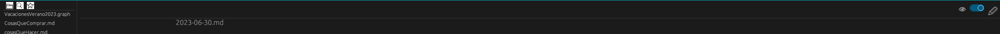
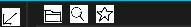

Este es un programa inspirado en otro programa llamado obsidian, este primero es un interprete de archivos de markdown, en el cual se pueden guardar notas y en estas se renderizaran despues con las reglas de markdown correspondientes.
Pero no me gusto este programa pues consume mucha memoria RAM y no hay una forma dentro del programa de automatizar los respaldos mas que por extenciones y solo por medio de git, entonces escribi este programa para corregir esto, ahora le faltan algunas cosas que me gustaria agregar asi,
pero tambien tiene otras caracteristicas que obsidian no tiene.
Al igual que obsidian te preguntara si quieres crear un nuevo vault o abrir uno nuevo,
Pero debo de mejorar lo de crear un nuevo vault pues se necesita que se ingrese el path completo para poder crear un directorio ahí, tambien tiene la opcion de crear una nota diaria, hay plugins en obsidian que permiten crear una nota semanal y mensual, asi que tal vez agregue eso,
al igual que obsidian tambien tiene un modo de edicion y de vista

Tambien como obsidian se pueden mostrar los archivos que hay en un vault, buscar por algo en todos los archivos, y tambien soporta busqueda con regex, ademas de mostrar los documentos favoritos, se puede hacer un documento favorito con click derecho.

Algunas de las caracteristicas que obsidian no tiene son renderizar tablas por defecto e interfaces especiales para administrar cosas especificas, en este momento son actividades diarias y gastos e ingresos pero tambien pienso agregar mas
Algunas cosas que obsidian tiene y que megustaria agregar es la sincronizacion de archivos a un servidor remoto y varios detalles en como se ve, y el plugin de Excalidraw, ademas de que me gustaria reescribir el renderizador de Markdown y poder crear un deamon para que de notificaciones.